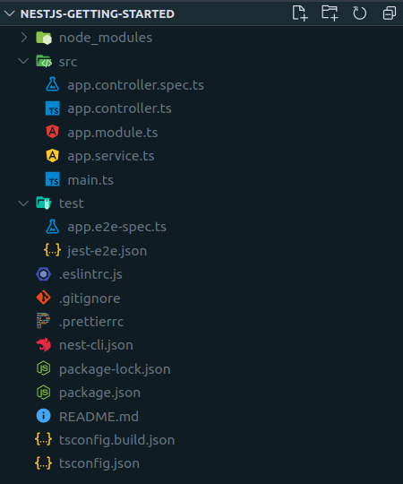

<!doctype html>
<html>
	<head>
		<!-- meta -->
		<meta charset="utf-8">
		<meta name="viewport" content="width=device-width, initial-scale=1.0, maximum-scale=1.0, user-scalable=no">

		<!-- title -->
		<title>Code quality presentation</title>

		<!-- load style -->
		<link rel="stylesheet" href="css/reveal.css">
		<link rel="stylesheet" href="css/theme/topTHEME.css">

		<!-- Theme used for syntax highlighting of code -->
		<link rel="stylesheet" href="lib/css/zenburn.css">
		<link rel="stylesheet" href="css/font-awesome-4.3.0/css/font-awesome.min.css">
		<!-- Printing and PDF exports -->
		<script>
			var link = document.createElement( 'link' );
			link.rel = 'stylesheet';
			link.type = 'text/css';
			link.href = window.location.search.match( /print-pdf/gi ) ? 'css/print/pdf.css' : 'css/print/paper.css';
			document.getElementsByTagName( 'head' )[0].appendChild( link );
		</script>

		<style>
			.left {
				float: left;
				margin-left: 60px;
			}
			.right {
				float: right;
				margin-right: 60px;
			}
			.clear {
				clear: both;
			}
			.reveal table.tic-toe {
				border-collapse: separate !important;
			}
			td {
				width: 40px;
				height: 40px;
				text-align: center !important;
			}
			td:nth-child(2) {
				border-left: 1px solid white;
				border-right: 1px solid white;
			}

		</style>
	</head>
	<body>
		<div class="reveal">
			<!-- Кнопка для включения и отключения субтитр -->
			<div class="chalkboard-button" id="toggle-chalkboard" 
				style="position: fixed; z-index: 30; font-size: 22px;
				left: 60px; bottom: 32px;" >
				<a href="#" id="noteswitch" title="Включение/отключение
					заметок к слайду">
					<i class="fa fa-sticky-note" aria-label="
					Заметки к слайду"></i>
				</a>
			</div>

			<div class="slides">
				<section data-markdown data-separator-notes="^Note:">
					<script type="text/template">
						Nest JS
						==================
						
						
						Note:
					
					</script>
				</section>

				<section data-markdown data-separator-notes="^Note:">
					<script type="text/template">
						Key Points
						---------------
						1. TypeScript
						2. MVC

						Note:
					</script>
				</section>

				<section data-markdown data-separator-notes="^Note:">
					<script type="text/template">
						Problems
						-------------
						
						1. JS/TS 
						2. Decorators
						3. providers				
						Note:
						
					</script>
				</section>

				<section  data-markdown data-separator-notes="^Note:">
					<script type="text/template">
						
					</script>
				</section>

				<section data-markdown data-separator-notes="^Note:">
					<script type="text/template">
						Module
						-------------
						```
						import { Module } from '@nestjs/common';
						import { ProductsService } from './products.service';
						import { ProductsController } from './products.controller';

						@Module({
						providers: [ProductsService],
						controllers: [ProductsController],
						})
						export class ProductsModule {
						}
						```
						
						Note:
						
					</script>
				</section>

				<section data-markdown data-separator-notes="^Note:">
					<script type="text/template">
						Controller
						-------------
						```
						import {Controller, Get, Post, HttpCode, Header} from '@nestjs/common';
						import { ProductsService } from './products.service';

						@Controller('products')
						export class ProductsController {
							constructor(private readonly productsService: ProductsService) {
							}

							@Get()
							// @Redirect('https://google.com', 301)
							getAll() {
								return this.productsService.getAll()
							}

							@Get(':id')
							getOne(@Param('id') id: string) {
								return this.productsService.getById(id)
							}

							@Post()
							@HttpCode(HttpStatus.CREATED)
							@Header('Cache-Control', 'none')
							create(@Body() body) {
								return this.productsService.create(body)
							}
						}
						```
						
						Note:
						
					</script>
				</section>

				<section data-markdown data-separator-notes="^Note:">
					<script type="text/template">
						Provider
						-------------
						```
						import { Injectable } from '@nestjs/common';
						import { ProductModel } from './product.model'

						@Injectable()
						export class ProductsService {
							constructor() {}

							getAll() {
								return ProductModel.getAll()
							}

							getById(id: string) {
								return ProductModel.findById(id)
							}
							
							create(params) {
								const newProduct = new ProductModel(params)
								return newProduct.save()
							}
						}
						```
						
						Note:
						
					</script>
				</section>			
			</div>
		</div>

		<!-- load js -->
		<script src="lib/js/head.min.js"></script>
		<script src="js/reveal.js"></script>
		<script src="js/lib.js"></script>

		<script>
			// More info about config & dependencies:
			// - https://github.com/hakimel/reveal.js#configuration
			// - https://github.com/hakimel/reveal.js#dependencies
			Reveal.initialize({
				
				// save slide
				history: true,
				slideNumber: true,
				touch: true,

				// show katex error
				math: {
					notificationsEnabled: true,
				},

           menu: {
                side: 'left', //Расположение меню
                numbers: true, //Нумерация слайдов
                markers: true, //Маркер посещения
                titleSelector: 'h1, h2, h3, h4, h5, h6', //Заголовки, отображаемые в меню
                useTextContentForMissingTitles: true, //Если заголовка нет, то подставляем первые слова слайда
                hideMissingTitles: false, //Если заголовка нет, то скрываем слайд из меню
                transitions: true, //Установить меню анимации
                openButton: true, //Скрыть кнопку меню
                keyboard: true, //Открытие меню по кнопке m
                
            },

				// load dependencies
				dependencies: [
					{
						// tex
						src: 'plugin/math-katex/math-katex.js', 
						async: true,
						callback: () => {
							// solve problem with katex 
							let section = document.querySelectorAll('section script');
								section.forEach( (item, i) => {
									section[i].innerHTML = section[i].innerHTML
										.replace(/\\/g,'\\\\')
										.replace(/_/g,'\\_')
										.replace(/\{/g,'\\\{')
										.replace(/\}/g,'\\\}');
							});
						},
					}, { 
						//markdown
						src: 'plugin/markdown/marked.js',
					}, { 
						src: 'plugin/markdown/markdown.js', 
						async: true,
					},{ 
						//Menu
						src: 'plugin/menu/menu.js',
						async: true
					},{ 
						//notes
						src: 'plugin/notes/notes.js', 
						async: true
					}, { 
						// highlight syntax
						src: 'plugin/highlight/highlight.js', 
						async: true, 
						callback: () => {
							let code = document.querySelectorAll('code');
							code.forEach ( (item, i) => {
								code[i].innerHTML = code[i].innerHTML
									.replace(/\\{/g,'{')
									.replace(/\\}/g,'}');
							});
							hljs.initHighlightingOnLoad();
						}
					}
				]
			});

			let showNodes = () => {
				Reveal.configure({
					showNotes: (
						Reveal.getConfig().showNotes ? 
							false: true
						)
				});
				return false;
			}

			window.onload = () =>  {
				document.querySelector('#noteswitch').onclick = showNodes;
				Reveal.configure({
					keyboard: {
						68: showNodes
					}
				});
			}
		
		</script>
	</body>
</html>